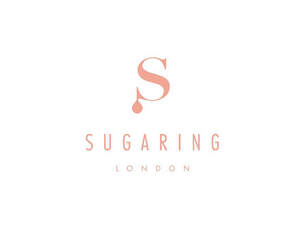
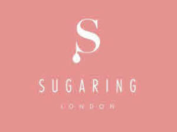

Trade Mark Journal No.2026/007 13 February 2026
UK00004328864 23 January 2026 (44)
Mark 1

Mark 2

Pursuant to Section 13 of the Trade Marks Act 1994, the applicant makes no claim to the exclusive right to use the words 'Sugaring' and 'London' in isolation, which appear printed below the figurative mark. This is because the applicant recognises each word to consist exclusively of indications which may serve, in trade, to designate the kind ('Sugaring') and geographical origin ('London') of the services in resect of which the figurative mark has been registered. When taken together with the figurative mark above depicting a capital 'S' with a roman-esque typeface and droplet trailing off the bottom serif, this enables the registrar and other competent authorities and the public to determine the clear and precise subject matter of the protection afforded to the applicant, and distinguishes its services from those of other undertakings (see section 1(1) TMA 1994). The same can be said with respect to the mark's slim font with all capitalised letters, in either of the soft pink and white combinations.
- Class 44
- Beauty salons; Beauty care; Beauty treatment; Human hygiene and beauty care; Facial beauty treatment services; Beauty care for human beings; Consultancy in the field of body and beauty care; Beauty advisory services; Beauty consultancy services; Information relating to beauty care; Information relating to beauty; Consultation services relating to beauty care; Advisory services relating to beauty care; Consultancy services relating to beauty; Advisory services relating to beauty treatment; Providing information about beauty; Cosmetic treatment services for the body, face and hair.
Sugaring London Limited